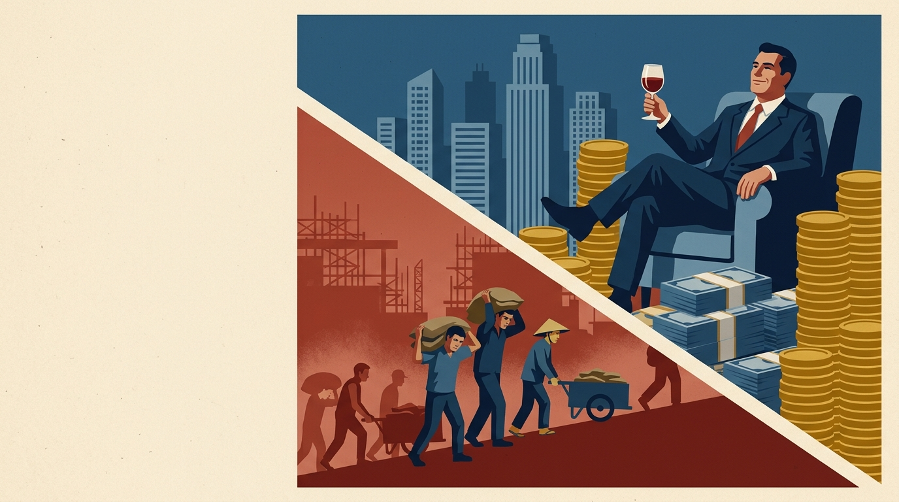
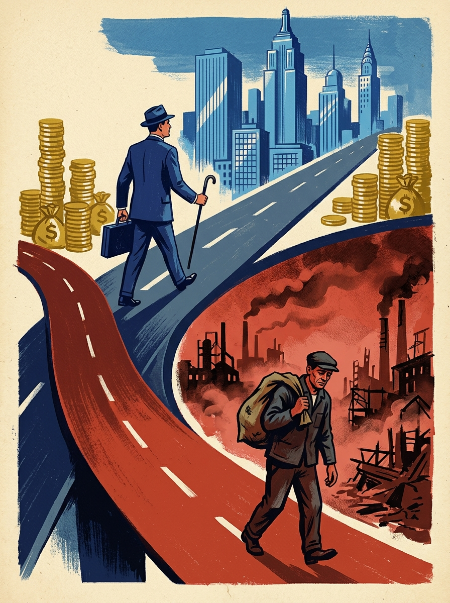
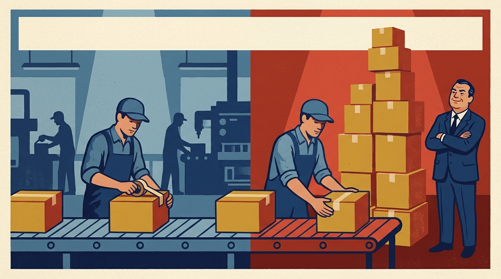
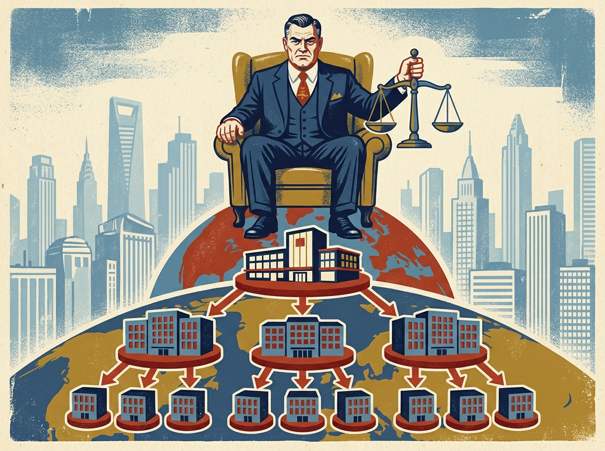
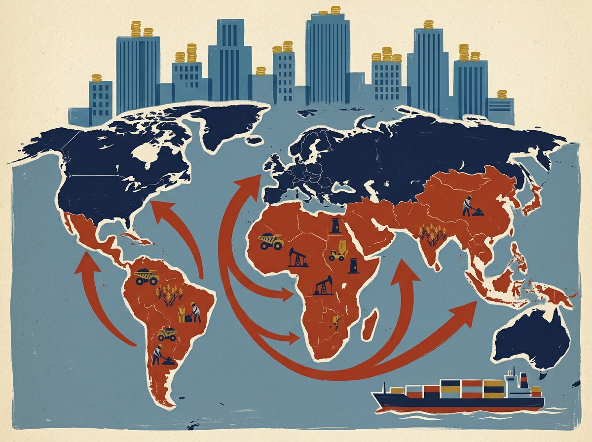
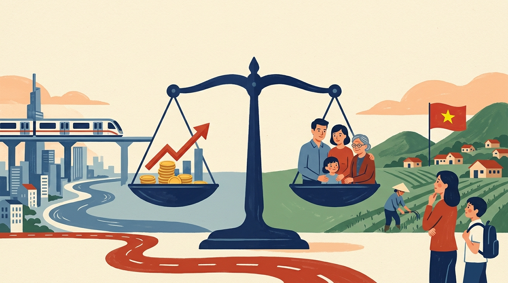

TRONG KINH TẾ THỊ TRƯỜNG
TƯ BẢN CHỦ NGHĨA
Quy luật giá trị, cạnh tranh và sự phân hóa những người sản xuất ban đầu.
02 Phần 2Bản chất bóc lột, công thức G = c + v + m và tấm màn che tiền công.
03 Phần 3Tăng cấu tạo hữu cơ c/v, tích lũy sự giàu có và tích lũy sự bần cùng.
04 Phần 4Citigroup qua 4 nấc độc quyền, tài phiệt, chế độ tham dự và bất bình đẳng quốc tế.
05 Phần 5Mâu thuẫn cơ bản của TBCN và định hướng phát triển vì con người tại Việt Nam.
Phân hóa giàu nghèo không phải là hiện tượng ngẫu nhiên, mà là khuyết tật có tính quy luật nội tại của kinh tế thị trường khi thiếu vắng sự điều tiết vì cộng đồng.
Cơ chế thị trường không tự động tạo ra cân đối, dẫn đến khủng hoảng chu kỳ và tổn thất nặng nề cho người lao động yếu thế.
Phân bổ lợi ích theo vốn và tài sản tích tụ, biến sự chênh lệch ban đầu thành hố sâu phân cực xã hội không thể tự hàn gắn.
"Trong nền kinh tế thị trường, hiện tượng phân hóa xã hội về thu nhập, về cơ hội là tất yếu. Bản thân nền kinh tế thị trường không thể tự khắc phục được khía cạnh phân hóa có xu hướng sâu sắc. Các quy luật thị trường luôn phân bổ lợi ích theo mức độ và loại hình hoạt động tham gia thị trường, cộng với tác động của cạnh tranh mà dẫn đến sự phân hóa như một tất yếu. Đây là khuyết tật của nền kinh tế thị trường cần phải có sự bổ sung và điều tiết bởi vai trò của nhà nước." — Giáo trình Kinh tế chính trị Mác - Lênin (Quốc gia), tr. 58
Do đó, trong thực tế không tồn tại nền kinh tế thị trường tư bản thuần túy có thể tự mang lại sự bình đẳng cho mọi tầng lớp xã hội.
Cơ sở kinh tế đầu tiên phân hóa những người sản xuất hàng hóa độc lập thành kẻ thắng cuộc giàu sang và người thua cuộc phải đi làm thuê.
Sự đào thải khách quan trong quá trình trao đổi ngang giá

Hao phí lao động cá biệt < Hao phí xã hội cần thiết → Bán theo giá trị xã hội thu được lợi nhuận siêu ngạch, nhanh chóng tích lũy tài sản.
Trình độ lạc hậu, hao phí cá biệt > Hao phí xã hội → Bán hàng bị thua lỗ, kiệt quệ tài chính và đứng trước bờ vực phá sản.
Thị trường không chấp nhận kẻ chậm chân; đào thải những người không bắt kịp mức hao phí trung bình của xã hội.
Tư liệu sản xuất và tiền tệ tập trung vào một số ít chủ thể vượt trội, biến họ thành giai cấp tư sản sở hữu quy mô lớn.
"Thứ ba, phân hóa những người sản xuất thành những người giàu, người nghèo một cách tự nhiên. Trong quá trình cạnh tranh, những người sản xuất nhạy bén với thị trường, trình độ năng lực giỏi, sản xuất với hao phí cá biệt thấp hơn mức hao phí chung của xã hội sẽ trở nên giàu có. Ngược lại, những người do hạn chế về vốn, kinh nghiệm sản xuất thấp kém, trình độ công nghệ lạc hậu... thì giá trị cá biệt sẽ cao hơn giá trị xã hội và dễ lâm vào tình trạng thua lỗ, dẫn đến phá sản, thậm chí phải đi làm thuê." — Giáo trình Kinh tế chính trị Mác - Lênin, tr. 60 - 61
Đây là mắt xích sơ khai giải thích vì sao ngay trong nền sản xuất hàng hóa giản đơn, mầm mống của phân hóa giai cấp đã nảy sinh.
Bí mật lớn nhất của phương thức sản xuất tư bản chủ nghĩa: Bóc lột giá trị thặng dư dưới tấm bình phong mua bán công bằng và hợp đồng lao động.
Máy móc chỉ chuyển dịch giá trị – Chỉ có lao động sống mới sáng tạo giá trị thặng dư
Sau 8 giờ: Bằng việc bắt công nhân làm thêm 4 giờ thặng dư mà không trả thêm tiền công, nhà tư bản chiếm đoạt trọn vẹn 15 USD m (tỷ suất m' = 100%).
"Giá trị sử dụng của hàng hóa sức lao động có tính năng đặc biệt mà không hàng hóa thông thường nào có được, đó là trong khi sử dụng nó, không những giá trị của nó được bảo tồn mà còn tạo ra được lượng giá trị lớn hơn. Đây chính là chìa khóa chỉ rõ nguồn gốc của giá trị lớn hơn giá trị thặng dư nêu trên do hao phí sức lao động mà có." — Giáo trình Kinh tế chính trị Mác - Lênin, tr. 79
"Như vậy, giá trị thặng dư là bộ phận giá trị mới dôi ra ngoài giá trị sức lao động do công nhân tạo ra, là kết quả của lao động không công của công nhân cho nhà tư bản. Ký hiệu giá trị thặng dư là m." — Giáo trình Kinh tế chính trị Mác - Lênin, tr. 81

"Tiền công khiến quan hệ lao động có vẻ như được trả cho toàn bộ thời gian làm việc."
Kéo các thanh trượt để quan sát cách nhà tư bản biến đổi Tỷ suất Giá trị Thặng dư (m') và bần cùng hóa người lao động:
"Tiền công là giá cả của hàng hóa sức lao động. Đó là bộ phận của giá trị mới do chính hao phí sức lao động của người lao động làm thuê tạo ra, nhưng nó lại thường được hiểu là do người mua sức lao động trả cho người lao động làm thuê. Cứ sau một thời gian lao động nhất định, người lao động làm thuê được trả một khoản tiền công nhất định. Điều đó thậm chí làm cho người lao động cũng nhầm hiểu là người mua sức lao động đã trả công cho mình. Trái lại, nguồn gốc của tiền công chính là do hao phí sức lao động của người lao động làm thuê tự trả cho mình thông qua sổ sách của người mua hàng hóa sức lao động." — Giáo trình Kinh tế chính trị Mác - Lênin, tr. 84
Cơ chế biến giá trị thặng dư thành tư bản phụ thêm: Tại sao tư bản tích tụ càng nhiều thì thất nghiệp và bất bình đẳng càng trầm trọng?
Nhà tư bản thu về giá trị thặng dư m do lao động không công tạo ra. Một phần lớn được giữ lại để 'tư bản hóa' tiếp tục chu kỳ bóc lột mới.
"Cấu tạo hữu cơ của tư bản là cấu tạo giá trị được quyết định bởi cấu tạo kỹ thuật và phản ánh sự biến đổi của cấu tạo kỹ thuật của tư bản (ký hiệu là c/v)... Quá trình tích lũy tư bản không ngừng làm tăng cấu tạo hữu cơ của tư bản. Cùng với sự gia tăng quy mô sản xuất và cấu tạo hữu cơ của tư bản, tư bản khả biến có xu hướng giảm tương đối so với tư bản bất biến, dẫn tới nguy cơ thừa nhân khẩu. Do đó, quá trình tích lũy tư bản có tính hai mặt, một mặt thể hiện tích lũy sự giàu sang về phía giai cấp tư sản; mặt khác tích lũy sự bần cùng về phía giai cấp công nhân làm thuê." — Giáo trình Kinh tế chính trị Mác - Lênin, tr. 96 - 98
Trong khi lương CEO tăng hơn 1.460% kể từ 1978, tiền lương thực tế của công nhân sản xuất điển hình chỉ tăng 18,1% (sau khi trừ lạm phát).
Kinh tế vẫn tăng trưởng, của cải làm ra nhiều hơn, nhưng phần bánh phân phối cho giai cấp công nhân ngày càng teo nhỏ so với phần nuốt trọn của các ông chủ tư bản.
Mức sống thực tế sụt giảm: không đủ trả tiền thuê nhà, gánh nợ học phí, mất bảo hiểm y tế khi rơi vào hàng ngũ 'đội quân thất nghiệp dự bị'.
Nghiên cứu điển hình: Quá trình phát triển của Tập đoàn Citigroup (1812 - 2025) qua bốn nấc thang độc quyền và cơ chế tư bản tài chính toàn cầu.
Nhấp vào từng nấc thang để xem chi tiết lý luận và số liệu hồ sơ lịch sử
Nguồn: encyclopedia.com; EBSCO; Bộ Tài chính Mỹ; SEC; Citigroup Form 10-K năm 2025.
Từ cạnh tranh tự do đến độc quyền: Citigroup trở thành ngân hàng lớn nhất nước Mỹ
City Bank of New York được thành lập, tiền thân đầu tiên của Citigroup hiện đại.
James Stillman nắm quyền chủ tịch khi ngân hàng đang thua lỗ nặng nề.
Sau cuộc đại khủng hoảng kinh tế 1893, trở thành ngân hàng lớn nhất New York; năm 1894 vươn lên lớn nhất nước Mỹ.
Tiến hành thâu tóm toàn bộ Third National Bank, củng cố vị thế độc quyền tư nhân.
Đối chiếu (hình thức cartel): OPEC – các nước xuất khẩu dầu mỏ phối hợp sản lượng để tác động giá. Với Citigroup, nguồn chỉ cho thấy tích tụ, tập trung vốn qua mở rộng và thâu tóm; không gắn nhãn cartel hay syndicate.
Sự liên minh máu thịt giữa Ngân hàng và Đại tư bản Công nghiệp

Giả định: Công ty mẹ nắm giữ tỷ lệ cổ phần khống chế ở công ty con, công ty con nắm giữ tỷ lệ tương tự ở công ty cháu.
Citigroup 2008–2010: Nhà nước bơm vốn và bảo lãnh để giữ độc quyền đứng vững
Bộ Tài chính đầu tư vốn qua Chương trình mua vốn (CPP).
25 tỷ USDGói bổ sung: cổ phiếu ưu đãi và bảo lãnh danh mục tài sản độc hại. Citi tự chịu 29 tỷ đầu tiên; chính phủ chịu 90% phần vượt.
Bảo lãnh 306 tỷBộ Tài chính đầu tư thêm vốn (Chương trình TIP).
20 tỷ USDBảo lãnh danh mục chính thức (sau giảm còn 301 tỷ); phần lỗ của Bộ Tài chính tối đa 5 tỷ USD.
301 tỷ USDĐổi 25 tỷ cổ phiếu ưu đãi lấy khoảng 7,7 tỷ cổ phiếu phổ thông, chính phủ nắm khoảng 27% cổ phần.
27% cổ phầnCiti hoàn trả 20 tỷ USD và chấm dứt thỏa thuận bảo lãnh.
20 tỷ hoàn trảBộ Tài chính bán hết cổ phần, thu hồi 45 tỷ cộng khoảng 12 tỷ USD lợi nhuận.
45 + 12 tỷ lãiNguồn: Bộ Tài chính Mỹ (3/2010, 12/2010); Citigroup 8-K; điều trần S. Hrg. 111-472; Fortune; Wilmarth, Indiana Law Review.
Citigroup 2025: Gần 160 quốc gia và vùng lãnh thổ; Đối chiếu bail-in ở Síp 2013
25/3/2013: Eurogroup quyết định gói vay tối đa 10 tỷ EUR. Đổi lại, Laiki Bank bị đóng cửa và 47,5% tiền gửi trên 100.000 EUR tại Bank of Cyprus được chuyển thành cổ phần. Khu vực ngân hàng lớn tới khoảng 8 lần GDP; thất nghiệp vọt lên 17% vào tháng 10/2013.
Nguồn: Citigroup 10-K 2025; ESM; AP qua CS Monitor; Bộ Tài chính Síp.
TRÊN PHẠM VI THẾ GIỚI
Bắc bán cầu (21% dân số): Nắm 69% tài sản & 77% tài sản tỷ phú
Phần còn lại thế giới (79% dân số): Chia sẻ 31% tài sản còn lại

Từ mâu thuẫn kinh tế cơ bản của Chủ nghĩa Tư bản đến con đường xây dựng nền Kinh tế thị trường Định hướng Xã hội Chủ nghĩa tại Việt Nam.
Sản xuất ngày càng mang tính xã hội hóa cao độ, nhưng tư liệu sản xuất lại thuộc sở hữu tư nhân tư bản chủ nghĩa.
Thành quả sản xuất của toàn xã hội bị tập trung vào tay thiểu số giai cấp tư sản nắm giữ tư bản.
người Mỹ (10,2%) sống dưới chuẩn nghèo năm 2025.
Nguồn: Census Bureau, 2025Tầng lớp trung lưu đối mặt khủng hoảng sinh hoạt phí: khó mua nhà và chật vật chi trả học phí đại học cho con.
Tăng trưởng kinh tế phải đi cùng tiến bộ và công bằng xã hội.

Không chờ đợi nền kinh tế phát triển cao mới thực hiện công bằng; không "hy sinh" công bằng xã hội để chạy theo tăng trưởng kinh tế đơn thuần.
Phân phối chủ yếu theo kết quả lao động và hiệu quả kinh tế, đồng thời bảo đảm an sinh xã hội cho người yếu thế để không ai bị bỏ lại phía sau.
Nhà nước quản lý nền kinh tế bằng pháp luật và chính sách kinh tế vĩ mô để hạn chế khuyết tật thị trường, ngăn ngừa độc quyền lũng đoạn xã hội.
"Nền kinh tế thị trường định hướng xã hội chủ nghĩa ở Việt Nam thực hiện gắn tăng trưởng kinh tế với công bằng xã hội; phát triển kinh tế đi đôi với phát triển văn hóa - xã hội; thực hiện tiến bộ và công bằng xã hội ngay trong từng chính sách, chiến lược, quy hoạch, kế hoạch và từng giai đoạn phát triển của kinh tế thị trường... Không đợi tới khi có nền kinh tế phát triển cao mới thực hiện tiến bộ và công bằng xã hội, và càng không thể 'hy sinh' tiến bộ và công bằng xã hội để chạy theo tăng trưởng kinh tế đơn thuần. Tuy nhiên, thực hiện tiến bộ và công bằng xã hội không phải là cào bằng hay kiểu bình quân, chia đều các nguồn lực." — Giáo trình Kinh tế chính trị Mác - Lênin, tr. 166 - 167
Hệ thống 20 câu hỏi trắc nghiệm khách quan toàn diện kiến thức Kinh tế Chính trị Mác - Lênin kèm đánh giá đúng/sai và chức năng tải kết quả bài làm về máy tính